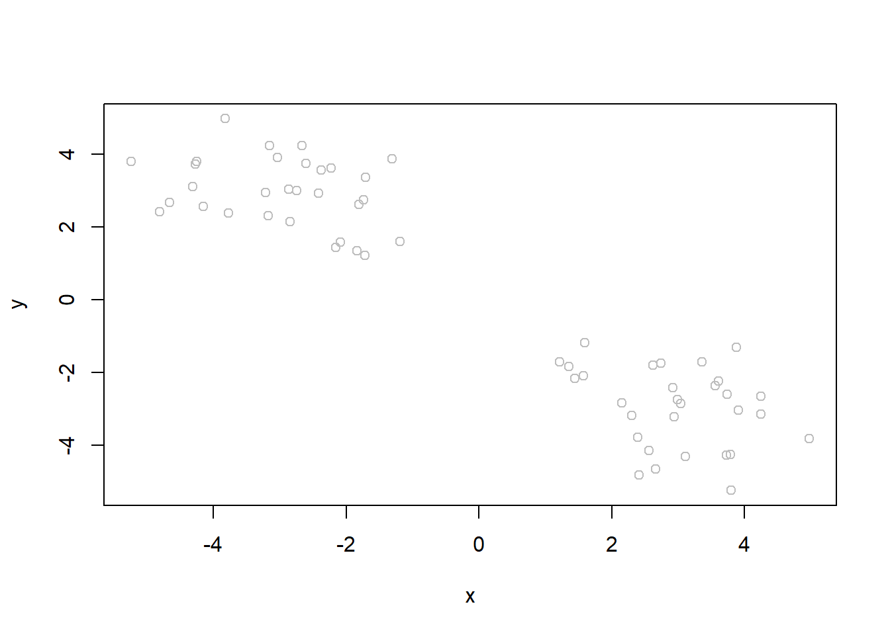

Make dataframe where x = -3 numbers then + 3 numbers, y is reverse order
x <-data.frame(x = temp, y =rev(temp))head(x)
x y
1 -5.241423 3.793707
2 -4.152905 2.555991
3 -1.707248 3.355982
4 -3.211993 2.937214
5 -2.084086 1.572492
6 -4.663006 2.661778
Check that we get what we expect
ggplot(x, aes(x, y)) +geom_point()
K means Clustering
km <-kmeans(x, 2)# centers equals the number of clusters# clustering vector (below) is assigning points to each cluster (i.e. cluster 1 and 2)# Within cluster sum of squares by cluster: how good algorithm is at assignment (read more) looking at difference between distance within vs between clusters (watch the videos for more detail!)
It’s important to not just run the analysis but be able to get the important results back!
Find the size of the clusters
km$size
[1] 30 30
# size = number of points in each cluster
Center of clusters
km$centers
x y
1 -2.940007 2.959581
2 2.959581 -2.940007
Where do I find the main result - the cluster assignment vector?
Can we make a summary figure showing our result? With the points colored by cluster assignment and add cluster centers?
plot(x, col = km$cluster)
The BIG PROBLEM with kmeans: you set the cluster #, so the output is somewhat self-determining
One way to check the right number of clusters: try multiple cluster #, then for each k check the value of tot.withinss, plot as a function of k, this is called a Scree Plot
Output of the scree plot: the “cliff face” or inflection point is the point that caused the most change (after which the tot.withinss doesn’t drop much more it levels off)
If the Scree plot is linear or doesnt drop off much then your data can’t be classified well
Ggplot version
# set cluster as a factor variablekm$cluster <-as.factor(km$cluster)# then plotggplot(data = x) +aes(x = x, y =y, color = km$cluster) +geom_point() +# geom_point(data = km$centers, aes(x = km$centers[,1], y = km$centers[,2])) + labs(title ="Points colored by k-means clustering")
How to plot the center points? - When plotting from two separate dataframes, need the first data argument in ggplot to be empty, put the data inside the aesthetics - Also, make sure to make km$centers into its own dataframe
centers <-data.frame(km$centers)ggplot(data =NULL) +geom_point(data = x, aes(x = x, y = y, color = km$cluster)) +geom_point(data = centers, aes(x = x, y = y), size =4, alpha =0.4) +labs(title ="Points clustered with centers labeled")
Making repeating vectors
mycols <-rep("grey", 60)
plot(x, col = mycols)

for loop in R
Try out various numbers for k, 1-7. We will write a for-loop to do this for us and store relevant output.
totss <-NULL# define empty output firstk <-1:7# set k values to testfor (i in k) {# cat(i, "\n") # print the current k value totss <-c(totss, kmeans(x, centers = i)$tot.withinss)# above runs kmeans, only saves tot.withinss values to the totss empty }
Scree Plot
plot(totss, typ ="o")
From Scree plot can see proper number of clusters is 2.
Hierarchical Clustering
Starts with every point being in its own cluster. However we can’t just give the function hclust() our input data x like we did for kmeans(). We need to first calculate a distance matrix. Can calculate this with the dist() function, by default will calculate Euclidean distance.
Call:
hclust(d = d)
Cluster method : complete
Distance : euclidean
Number of objects: 60
The print out isn’t helpful but the plot method is useful. It makes a dendrogram.
plot(hc) +abline(h =10, col ="red", lty =2)
integer(0)
# annotated the place where clustering will be done, resulting in 2 clusters
The numbers in the dendrogram are the rownames (helpful if your input data is genes in the future).
The height coordinate on the graph corresponds to the Euclidean distance between the set of points. The biggest “goalposts” or vertical lines is the place where there is the biggest distance between 2 groups, likely indicates where a cluster should be.
Don’t look at how close horizontally two numbers/rows are, that doesn’t necessarily mean anything! check the height of the bars that is the indicator of distance. If you want to double check look at the distance matrix.
To actually cluster the data by the red line in the graph above out of a hclust object, I can use the cutree(). Cutree returns a vector with the points annotated into clusters (the branches of the tree) resulting from a cut of that height.
You can also cutree by k (easier if there are tons of points)
grps <-cutree(hc, k =2)
Figure for cutree output
grps <-as.factor(grps)ggplot(data = x) +aes(x = x, y = y, color = grps) +geom_point() +labs(title ="Points labeled by cutree() output")
Principal Component Analysis
Dimensional Reduction:
On a PCA plot, the first PC (PC1) follows the “best fit” through the data. Principal components are new low dimensional axes closest to the observations. Once we find the line of best fit and the next line describing variation, we plot along these lines (not original dimensions).
The function is prcomp().
UK food data
Importing data
ukfood <-read.csv("https://bioboot.github.io/bggn213_f17/class-material/UK_foods.csv", header =TRUE, sep =",", row.names =1)# made sure to set row names to be the food categories not numbers
Finding the variation: Below we can use the square of pca$sdev, which stands for “standard deviation”, to calculate how much variation in the original data each PC accounts for